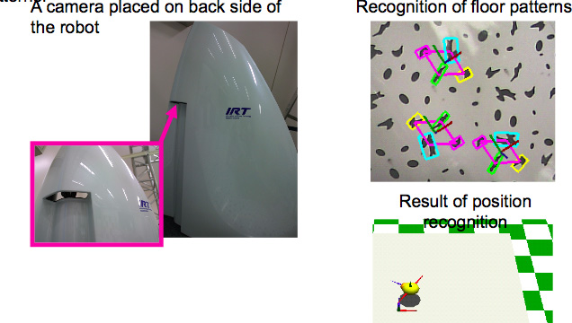

Indoor personal mobility robot
Steering interface of indoor‐type personal mobility
Indoor-type personal mobility is equipped with many sensors: 1. to know whether the object on the seat is human body or not, 2. to detect the center of gravity of the human body, the rotation of the seat, and the position of soles, 3. and to enable the driver to steer the robot only by his own body movement.
Position recognition with floor pattern
Robot position is calculated from visibilities of floor patterns.
Recognition of hand beckoning

LINK: website of IRT Reserach Inisiative, The University of Tokyo
Publications
- Tomoyuki Takahata, Akihito Nakai, Yoshiyuki Ohmura, Atsuhshi Hiyama, Nobuyasu Tomokuni, Kohei Okabe, and Kiyoshi Matsumoto “Haptic steering interface of indoor personal mobility robot,” RSJ2009 (Japanese domestic conference), 2009.